Update Page Designs
Eight takes on From 2D Art to Rigged Animated 3D Figures. Same words, different page.
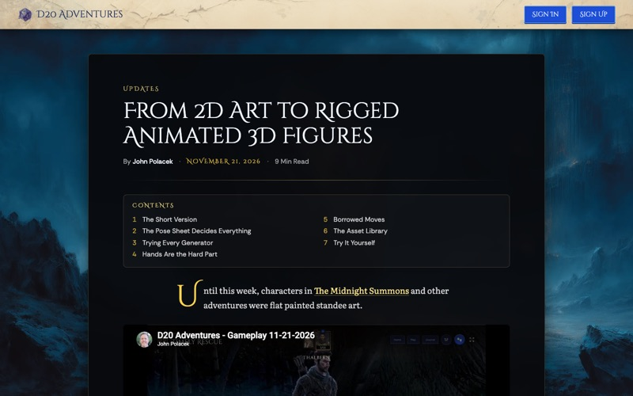
01 Refined CurrentToday's page, fixed. Narrower measure, cost ledger, captions, collapsed prompts.

02 Illuminated CodexLight theme. A parchment leaf with ink, rubric red and margin notes.
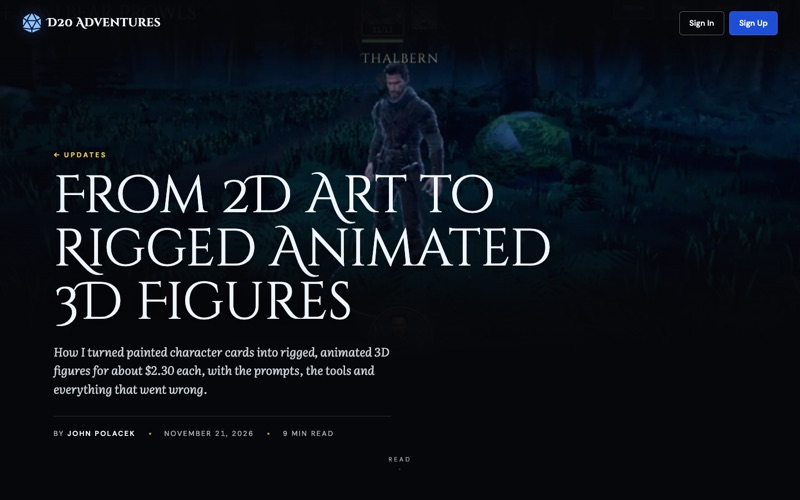
03 Cinematic LongformFull-bleed cover hero, chapter numerals, media that breaks the column.

04 Pipeline BlueprintDrafting-table schematic. The pipeline drawn as a flow diagram.

05 Magazine EditorialBig Literata headline, side column of stats, captions and pull quotes.

06 Sticky StageTwo panes. Media stays pinned and swaps as the text scrolls.

07 Quiet EngineeringFantasy dressing off. One column, sticky contents, prompts first-class.
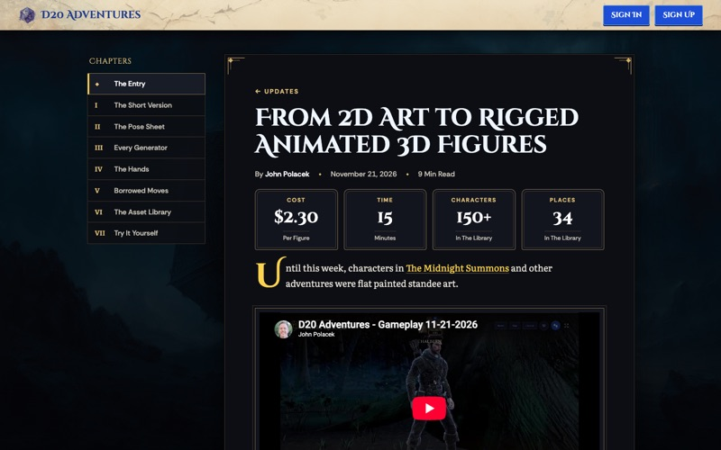
08 Adventurer's JournalThe game's own journal UI. Framed panels and a quest tracker pipeline.
Round 2: Readable Siblings of 02 and 07
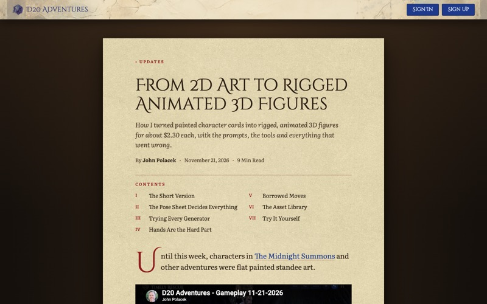
09 Plain CodexFrom 02. One column on the leaf, ornament cut by half.
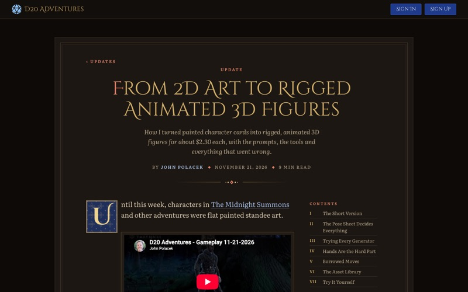
10 Night CodexFrom 02. The manuscript on a warm dark leaf.
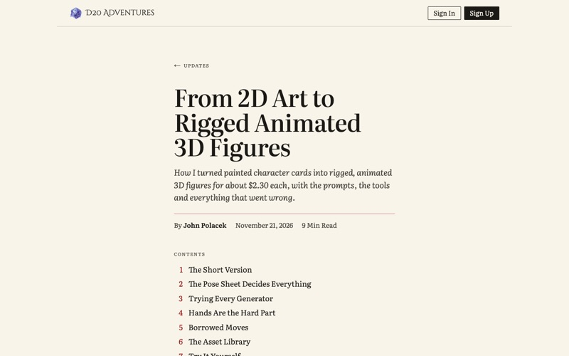
11 Printed BookFrom 02. Smooth cream paper, Literata throughout, one red.
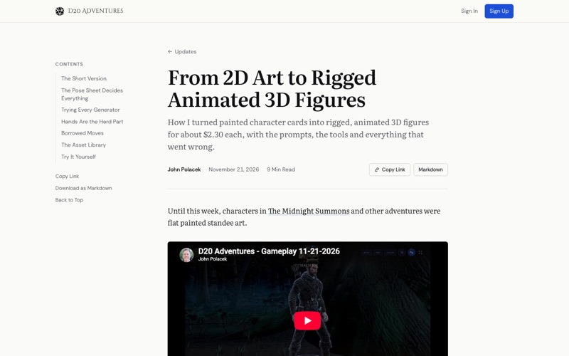
12 Quiet LightFrom 07. Light first, serif headings, blue accent.
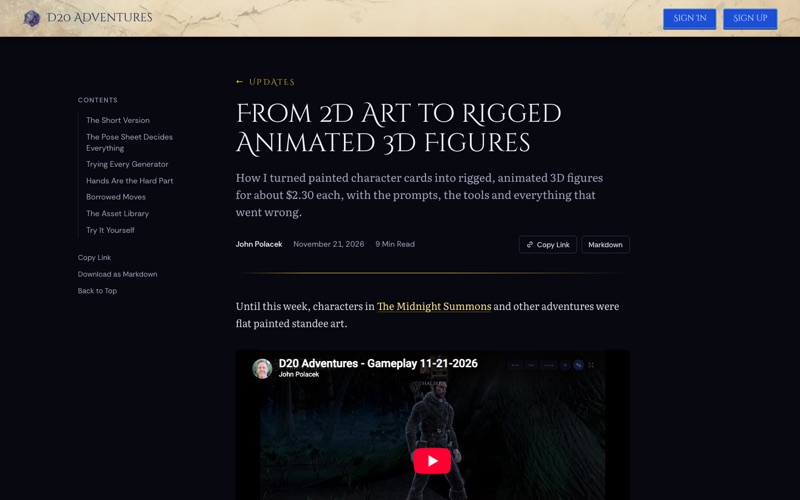
13 Quiet FantasyFrom 07. Same calm, with the site's header, Cinzel and amber back.
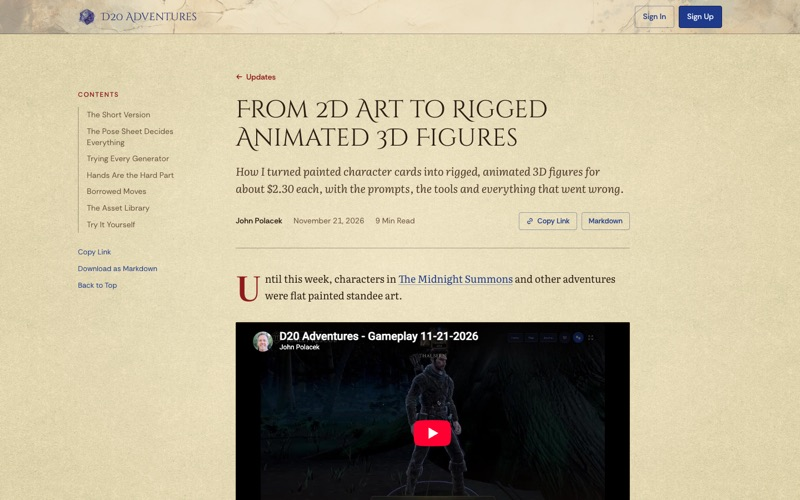
14 Parchment EngineeringBoth. 07's structure on 02's paper.
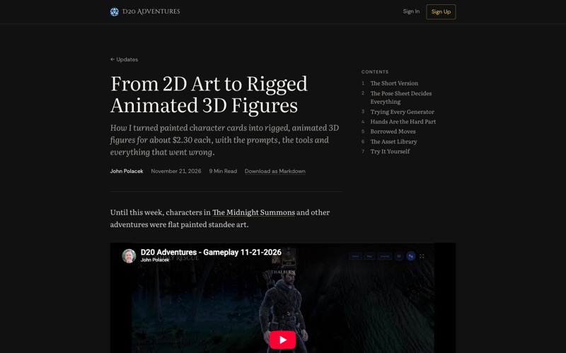
15 Margin NotesBoth. Dark and flat, captions and costs in a right margin.
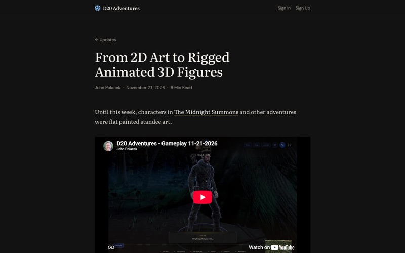
16 Bare EssayFrom 07. One column and nothing beside it.
Round 3: Quiet Light With Subtle Parchment, Light and Dark
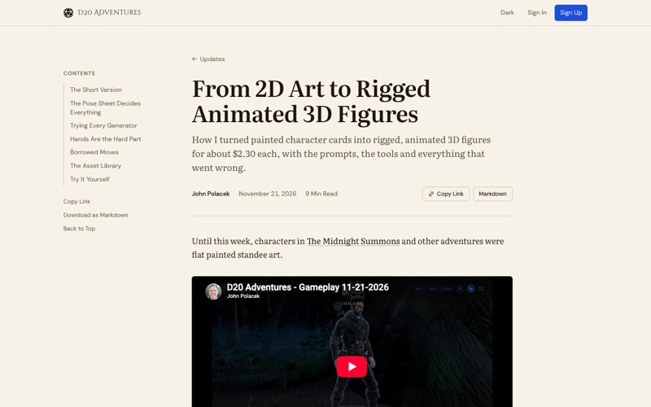
17 Warm PaperParchment as color only. No texture.
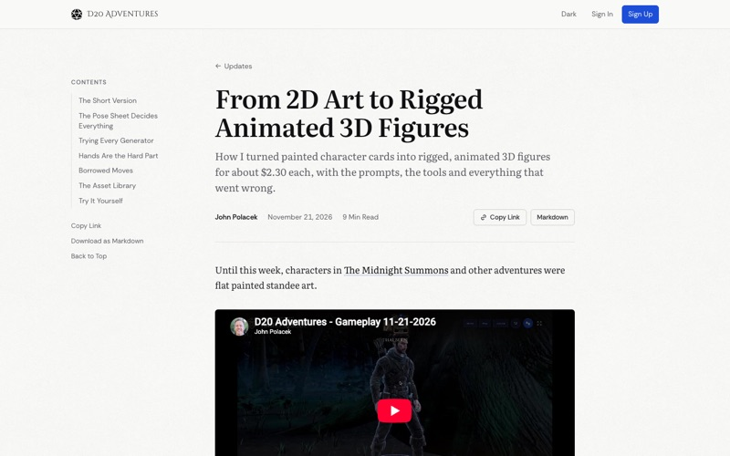
18 Faint GrainParchment as texture only. Colors unchanged.
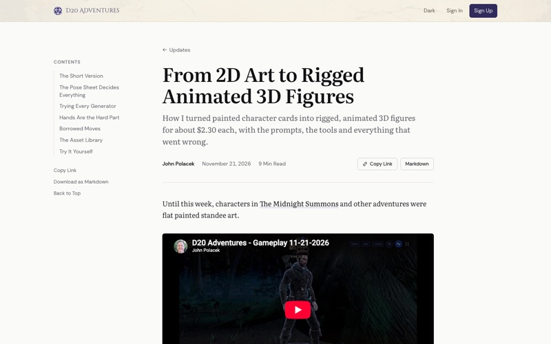
19 Parchment HeaderParchment in the top bar only.
20 Parchment SlipsParchment on the prompt cards and cost table only.
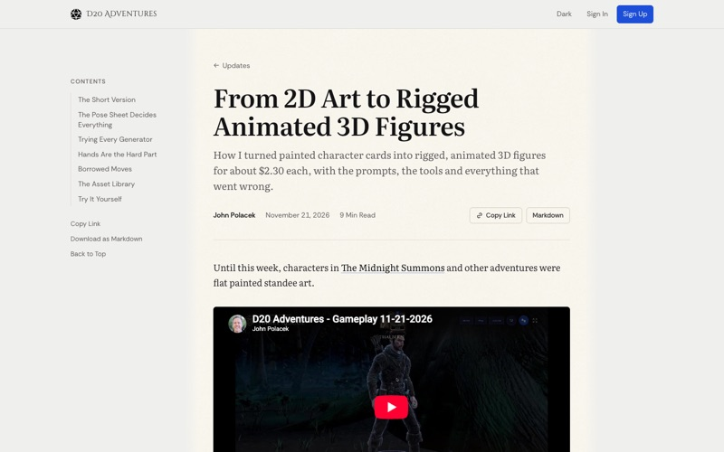
21 Paper SheetThe article sits on a pale sheet, a few percent off its surround.
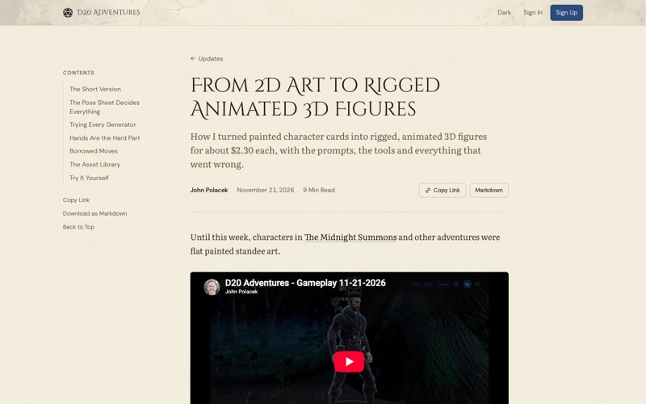
22 Quiet ParchmentAll of the above at once, each kept small.
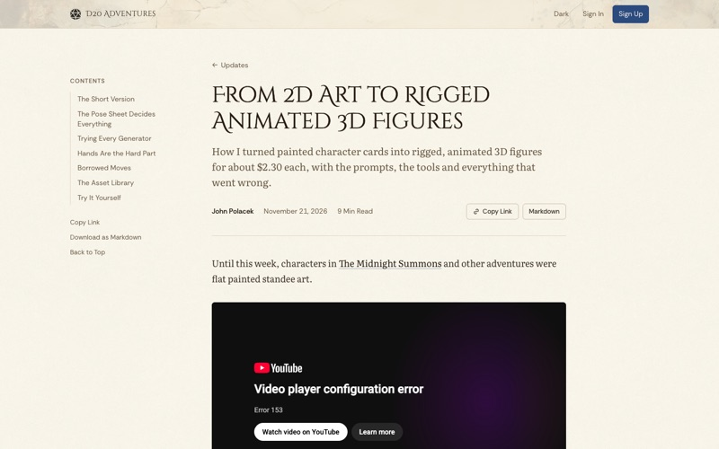
23 Quiet Parchment, Refined22 with a lighter page, a slightly bolder title and a darker, more textured header at night.